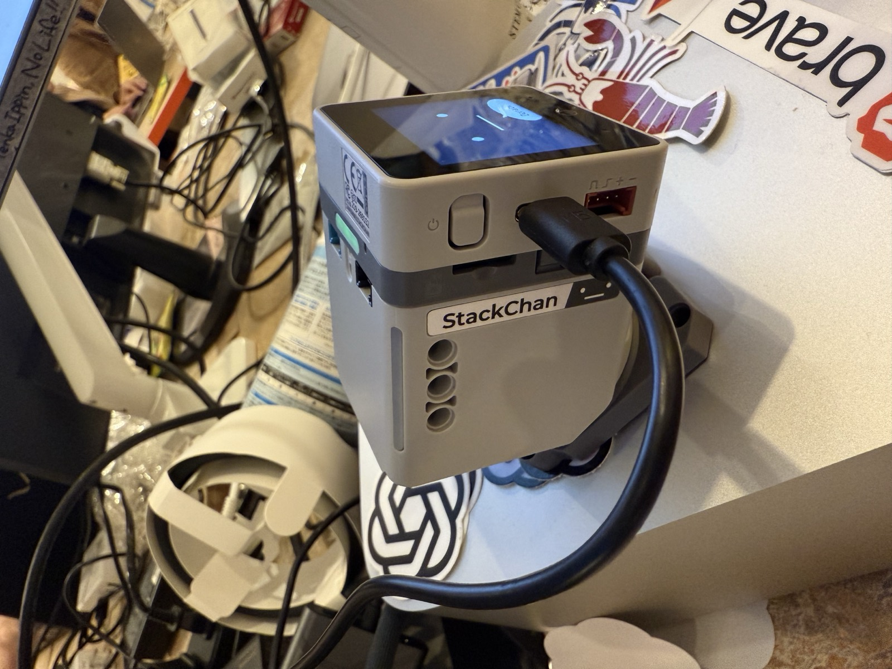

AI Dev Day 2026 ｜ Lightning Talk
スタックチャンと
AIエージェント
〜 自分で育てた"相棒"が物理世界に立つまで 〜
大谷 / aieo ｜ #ｽﾀｯｸﾁｬﾝお誕生日2026

このトークのゴール（15分）
- 🧸 スタックチャンって何？（知らない人が大多数、の前提で）
- 🛠️ 電子工作素人が作ってみた（サーボとケーブルとの格闘）
- 🗣️ AIエージェントと"会話"するには？（仕組みの全体像）
- ⚡ 実践の苦労＝レイテンシーとの戦い（生々しい実話）
キーメッセージ：育てたAIエージェントが、顔と声と体を持つと "相棒" になる。
① INTRO
そもそも、
スタックチャンとは？
来場者の大多数は、まだ知らない
カワイイ、OSSのロボット
- M5Stack ベースの手乗りサイズの卓上ロボット
- 首を振り・表情を出し・しゃべる
- 2021年 ししかわさん(@meganetaaan)が公開
- オープンソース→ 世界中が改造・着せ替え・AI化
- 2026年7月2日で 5歳のお誕生日 🎂

自作したスタックチャン。画面に"顔"が出る。
なぜこんなに愛されるのか
💴 安い・作れる・改造できる
OSS＋M5Stackで、個人が手を出せる。
😊 "顔"がある
道具ではなく"存在"として愛着がわく。
🎉 コミュニティ文化
お誕生日会・着せ替え・撮影ブース。
🌏 世界に広がる
無数のフォークと作例が生まれ続ける。
※ このブースの着せ替え＆撮影も、コミュニティ文化から生まれています
② HISTORY
スタックチャンの歴史
2021 → 2026、AIとの合流
カワイイ置物 → 会話する"相棒"へ
2021
誕生。サーボ2個で首振り・M5Stackの"顔"
2022–23
コミュニティ拡大。ChatGPT連携で"しゃべる"化
2026
M5公式版 スタックチャン(K151) 発売 ／ Module-LLM（オンデバイスLLM）登場
いま：クラウドAI × オンデバイスAI の二刀流時代へ
③ WHY PHYSICAL
なぜ"物理"なのか
AIエージェントを画面から出す価値
育てたエージェントが"体"を持つと
画面の中だけ
便利な"道具"どまり。
呼んでも"そこに居ない"。
顔・声・体を持つと
呼べば振り向く。そこに"居る"＝相棒。
育てた記憶・性格が物理世界に立つ。
AIエージェントを"育てた先"に見える、フィジカルな世界観
④ BUILD
作ってみた：
電子工作素人の壁 🛠️
サーボとケーブルとの、静かな戦い
告白
じつは、電子工作は初めてでした
ドライバーとケースとにらめっこ。「これ、どこにネジ留めるの…？」から始まりました。
壁①
ケーブルの海でおぼれる
Grove？ JST？ ポートA/B/C…？ 白いコネクタが全部同じに見える。「どれをどこに挿すのか」で手が止まる。
壁②
サーボとケーブルの格闘
コネクタの向き、挿すポート、配線の取り回し。ひとつ間違えると首が回らない・電源が入らない。素人には全部が初見の壁。
そして
画面に"顔"が出た瞬間 🎉
配線が通り、電源が入り、こちらを見て動く。ただの基板が"相棒"になった——この体験が、全部の入口でした。
⑤ HOW
AIエージェントと
会話するには？
仕組みの全体像
会話の4ステップ
各ステップを どこで動かすか（オンデバイス / クラウド）が勝負。速さと賢さはトレードオフ。

CoreS3＋Module-LLM の配線
我々の構成（aieo-stack-chan）
- 🧠 本体：M5Stack CoreS3 + Module-LLM（オンデバイスLLM/NPU）
- ☁️ 頭脳：Mac Studio 上の Claude Agent SDK
- 🗣️ 声：VOICEVOX（満別花丸） で日本語TTS
- 🌐 どこでも：Tailscale Funnel で家/テザリング/カフェ 同一URL
- 🚦 3モード：🟢Full / 🟡Degraded / 🔴Offline
鍵は "tiered cognition"（段階的な思考）
🟢 速い脳（本体内）
軽い応答・聞き取りはオンデバイスで完結。
☁️ 賢い脳（クラウド）
深い思考は Claude に任せる。
🎭 顔から声が出る：入力＝Module-LLMのマイク／出力＝CoreS3のスピーカー。
「速い脳」と「賢い脳」を使い分けるのが自然な会話のコツ。
⑥ LATENCY
実践の苦労
レイテンシーとの戦い ⚡
ここからが本番
問題："7秒の沈黙"
- 声をかけてから返事まで 7秒
- 人は 2秒黙られると「壊れた?」と感じる
- STT→LLM→TTS→音声転送 の往復が積み上がる
応答 合計
約 7秒（うち Claude API 3–4秒が最大ボトルネック）
出典：aieo-stack-chan issue #54
対策① モデル選び（7秒 → 5秒）
Claude API 3–4秒 → 1–2秒。会話用途では「そこそこ賢く・速い」が正解。
"一番賢いモデル" が "一番いい会話" とは限らない
出典：issue #54 perf(latency)
対策② 全文を待たない（ストリーミングTTS）
従来
全文が返ってから喋り出す → 長い答えほど遅い。
改善
文の区切りごとに即 合成・発話。
最初の一文ができた瞬間に喋り出す。
"返事の速さ" ＝ 喋り始めの速さ
出典：issue #87 文境界チャンクの即時TTS
対策③ "間つなぎ"で沈黙を消す
- 考えている間、即座に相づち。周囲会話から単語抽出（mecab・オンデバイス・トークン0）
- 事前合成キャッシュで 4秒 → 1秒
出典：issue #70 / #71（文脈ワード抽出＋アドホックモード）
対策④ オンデバイス化 & セッション
- TTSをオンデバイス（MeloTTS/NPU）へ → PCM転送 1–2秒削減
- セッション継続 + prompt caching で起動コスト削減
- ネット不調でも 🟡Degraded（オンデバイスのみ）で会話を止めない
＝ 混雑会場の
Wi-Fi対策にも直結（ブースの
懸念点への答え）
出典：issue #55 / #56
総力戦："速く"より"待たせない"
レイテンシーは 数字と体感 の両面で戦う
まとめ
- 🧸 スタックチャン＝カワイイOSSロボット、5歳、強いコミュニティ
- 🛠️ 電子工作素人でも、サーボとケーブルの壁を越えれば作れる
- 🤝 AIエージェントに顔・声・体を与えると "相棒" になる
- ⚡ 会話の鍵はレイテンシー：モデル/ストリーミング/間つなぎ/オンデバイスの積み上げ
- 🌟 育てたエージェントが物理世界に立つ ＝ これからの世界観
COME & SEE
ブースに会いに来てください 🎉
1F コミュニティショーケース ｜ 着せ替え & 撮影ブース ／ 実機デモ
#ｽﾀｯｸﾁｬﾝお誕生日2026 ｜ stackchan-event-booth.pages.dev